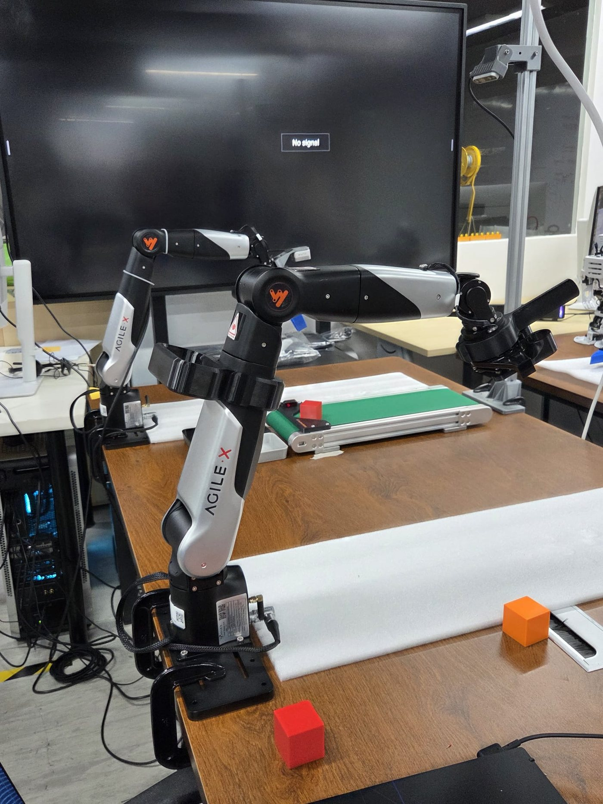
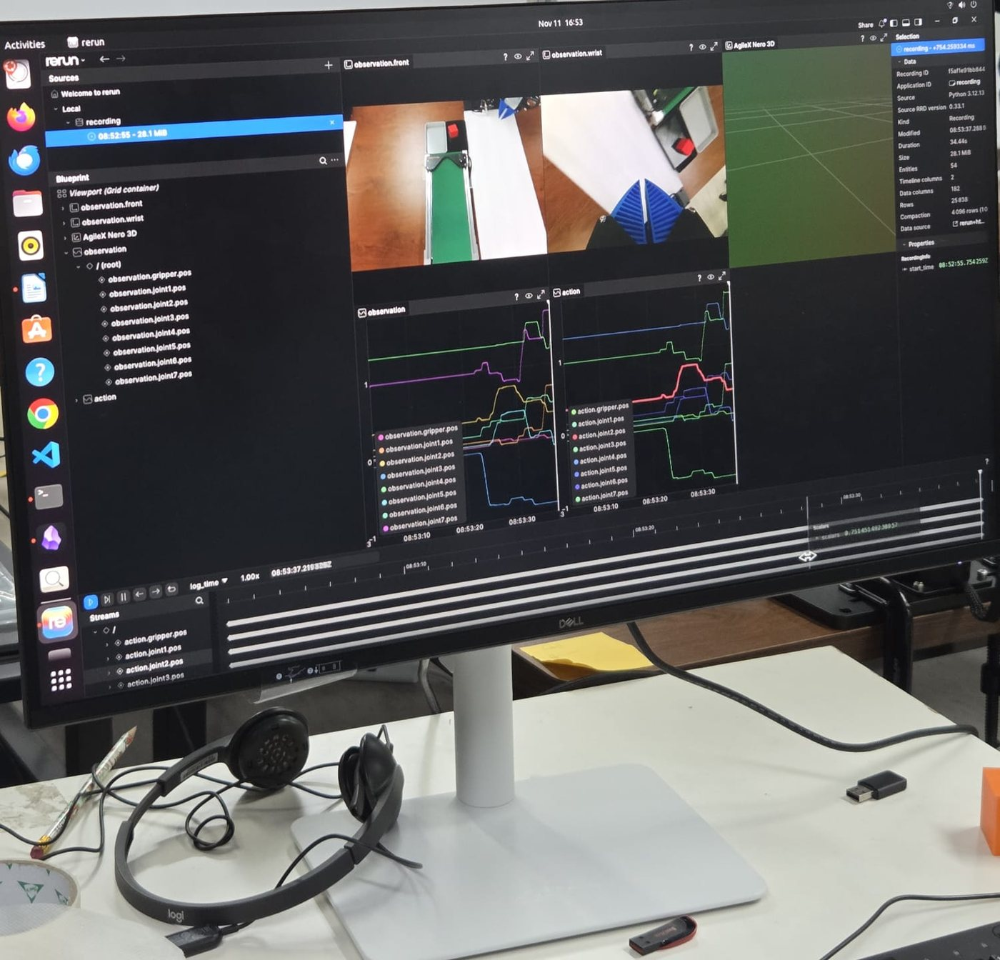
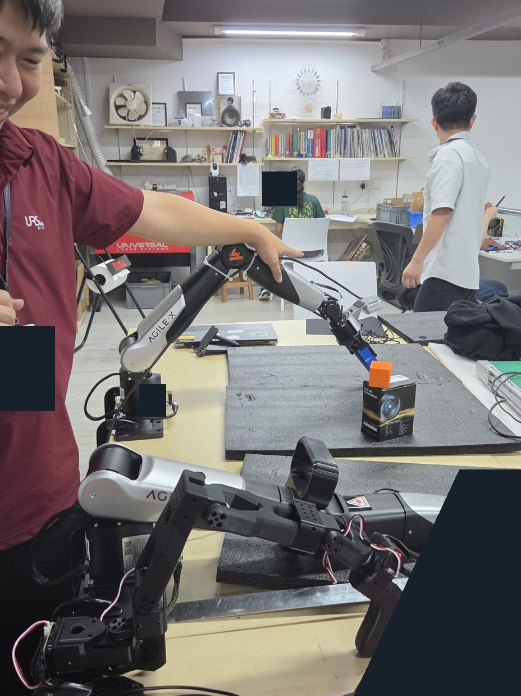
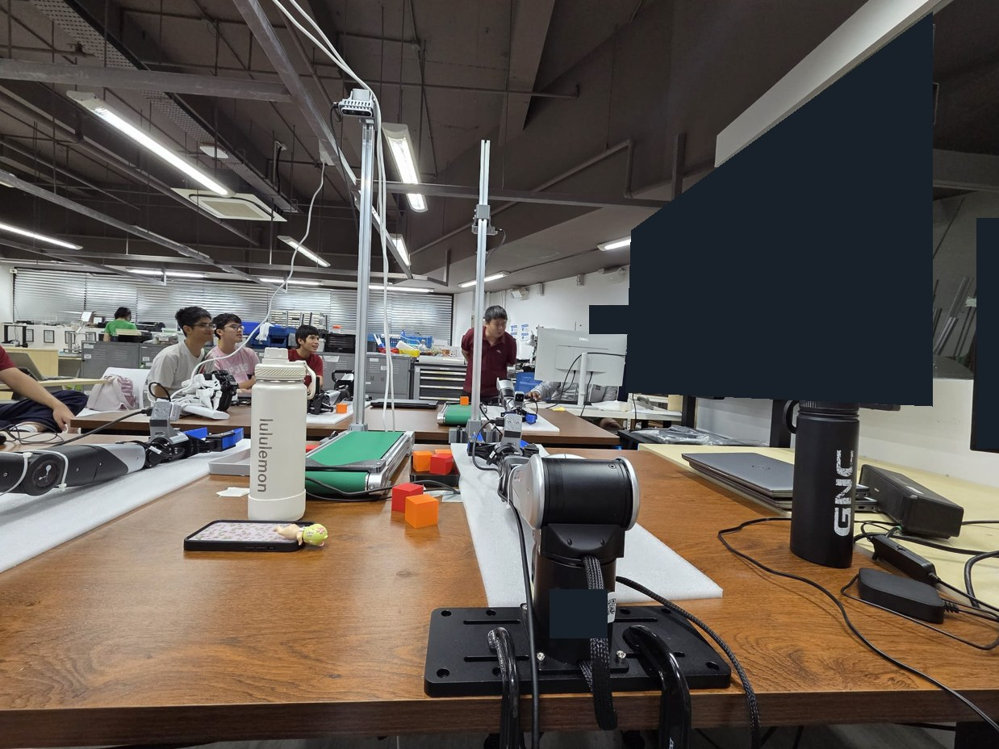
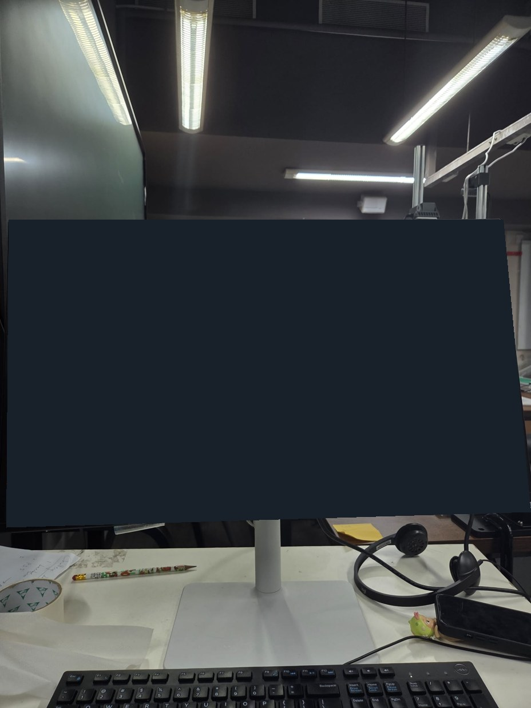

11 Nov 2026
The working plan from our D1 list. These are planned steps, not completed work.
Step 1
Dataset auditing
Watch every recorded episode, flag failures and out-of-distribution moments, and keep a manifest of what each episode contains. Decide acceptance criteria before collecting more.
Step 2
Trajectory cleaning & smoothing
Remove jitter and teleoperation noise from joint trajectories (for example low-pass filtering), fix timestamps and dropped frames so the policy learns smooth motion.
Step 3
Cleaning & purging data
Delete corrupted or failed episodes, deduplicate near-identical segments, and rebalance the dataset so the policy doesn't overfit one behaviour.
Step 4
Camera: RGB vs RGB‑D
Benchmark both. Start RGB-only (matching ACT/ALOHA[2]); add depth if tasks need geometry that colour alone can't give, weighing the extra calibration and sync work.
In the lab


Up next
Finish the ACT vs Diffusion vs GR00T comparison (D2 research slot, 2:00-2:30pm), then propose a small LeRobot ACT training run on the cleaned dataset as the first end-to-end test of the pipeline.
13 Nov 2026
A five-stage dataset-cleaning proposal from today's document. All numerical cutoffs below are starting points from the notes, not validated NERO settings, implemented code or completed experiments. Review flags first; keep the raw recordings and record every decision rather than deleting automatically.[8]
Proposed check
Stage 1 · Duration and length
The document proposes flagging duration T > Q3 + 1.5 × IQR. It also discusses keeping only the fastest 50% or 75%. These are different selection rules, not equivalent. We have not chosen either. Review slow but successful demonstrations before excluding them; the document does not establish that aggressive pruning gives the best model performance.[8]
Proposed check
Stage 2 · Boundary and idle trimming
Proposed speed: v[t] = ||q[t+1] - q[t]||₂ / Δt. Candidate movement threshold: 0.02 rad/s, sustained for 5 frames. Trim leading/trailing idle time with a small buffer, whose duration is not specified. Still to decide: the end condition and how to preserve meaningful pauses, contact and grasping. Low speed alone does not establish task completion.[8]
Proposed check
Stage 3 · Smoothness and jerk
Compute the finite-difference jerk and an episode squared-jerk score, then flag above mean + 2 × standard deviation or above the 95th percentile. These are alternative rules, not identical cutoffs. Optional smoothing in the notes: fourth-order Butterworth, 4-5 Hz, forward/backward filtering. Confirm sampling rate, score normalisation, joint units and edge handling first. A smooth trajectory can still be incomplete.[8]
Proposed check
Stage 4 · State-action consistency and recording health
Four candidate checks: (1) timestamps must increase; at an assumed 30 FPS the nominal interval is about 33.3 ms, with a proposed gap flag above 50 ms and episode flag after more than 3 gaps; (2) maximum joint action-state difference above 0.30 rad for more than 10 consecutive frames; (3) gripper range max(g) - min(g), with the screenshot proposing less than 0.005 m while the prose says zero; (4) review whether the task was attempted. None is a confirmed success detector. A long timestamp gap is not proof of a network packet loss; an action-state mismatch needs aligned timestamps and matching units/control modes before diagnosis. Confirm the actual joint channels rather than hard-coding the notes' seven-joint assumption.[8]
Proposed check
Stage 5 · Trajectory consistency
The notes propose resampling successful episodes to length 100 with cubic splines, comparing trajectories with DTW, choosing the medoid E* = argmin Σ D(Ei, Ej), then flagging d[i] > median(d) + 2 × MAD(d). Resampling length and the multiplier are untested choices. A high distance means an episode differs from that representative path, not that it failed. Review within the same task and strategy so valid alternatives are not discarded; no prevention of multimodal collapse has been demonstrated.[8]
Next step recorded in the notes
Per-episode quality check, still to run / confirm
The screenshot proposes activating the Conda environment with pandas and pyarrow, then running scripts/audit_and_clean_datasets.py with --datasets-dir datasets/ --check-episodes nero_conveyor_sort. This is a recorded next step only: the script was not inspected or executed for this write-up, and no per-episode results were supplied.[8]
Before implementation: confirm frame rate, joint layout, units, timestamp alignment, task-specific success labels and which thresholds to test. Compare kept/flagged examples with the team and retain the original data.
In the lab · Day 3
Three photos and a short clip from today. Captions describe what is visible, not a measured success rate. Screen content and incidental identifiers are covered; the published clip has no audio.


